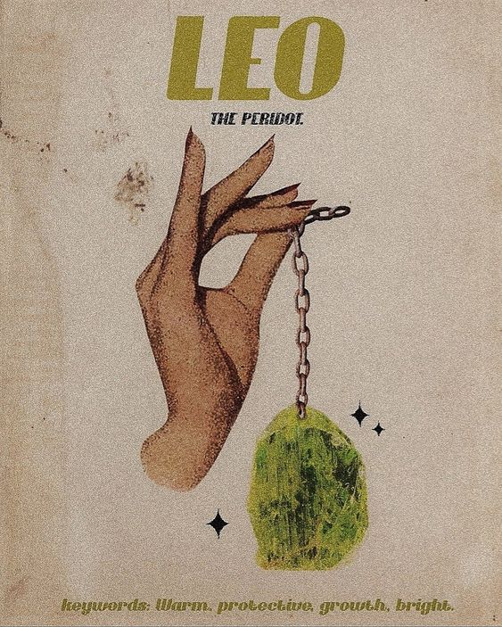

Personality Traits:
Leo, represented by the Lion, radiates warmth, courage, and charisma. Ruled by the Sun, the center of our solar system, Leos naturally assume leadership roles and enjoy being in the spotlight. They are known for their bold and theatrical nature, often displaying a sense of confidence and grandeur in their actions and speech. Leos possess an innate nobility, treating others with generosity and a magnanimous spirit. Their enthusiasm and zest for life are infectious, inspiring those around them to live fully and embrace their own creative impulses. Leos are fiercely loyal and protective of their loved ones, often going to great lengths to ensure their happiness and safety. They have a strong sense of honor and justice, not afraid to stand up for what they believe is right. While their desire for admiration and attention can sometimes come off as vanity, it stems from a deep need for appreciation and love. Leos are also creative souls, finding joy and fulfillment in expressing themselves through various artistic endeavors.
Personality Traits:
- Charismatic and Bold: cancer faces challenges head-on, fearlessly embracing the unknown.
- Generous and Warm-hearted: Endowed with boundless energy, cancer exudes a vibrant and enthusiastic aura.
- Creative and Expressive: Leo values freedom and autonomy, thriving in roles that allow self-expression.
- Loyal and Protective: The impulsive nature of Taurus leads to spontaneous actions and decisions.
Likes:
Leos thrive in social settings, enjoying the limelight and the opportunity to express their vivacious personalities. They have a love for luxury and beauty, appreciating high-quality items and experiences that reflect their own sense of grandeur. Leos seek out adventurous and fun activities, preferring to be surrounded by people who share their enthusiasm for life. In relationships, they look for partners who are equally expressive and loyal, valuing romantic gestures and deep connections.
Career and Ambitions:
Leos are natural leaders, drawn to careers that allow them to inspire and lead others. They excel in positions that offer visibility and recognition, such as in the entertainment industry, politics, or any leadership role within organizations. Their creative talents can also lead them to pursue careers in art, design, or any field that allows for self-expression. Leos aim high, driven by their ambition to achieve success and admiration in their chosen fields. Their desire for a career often aligns with their need for a platform to showcase their talents and to be acknowledged for their contributions.
I Recommend watching this!
Get to know your fellow Leo friends more!